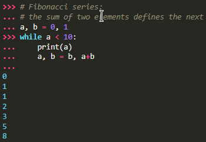

Of course, we can use Python for more complicated tasks than adding two and two together. For instance, we can write an initial sub-sequence of the
Fibonacci series as follows:

The keyword argument
end can be used to avoid the newline after the output, or end the output with a different string

Thus the journey begins